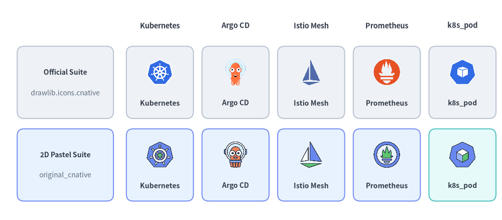
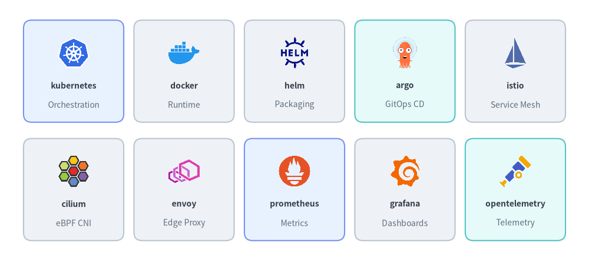
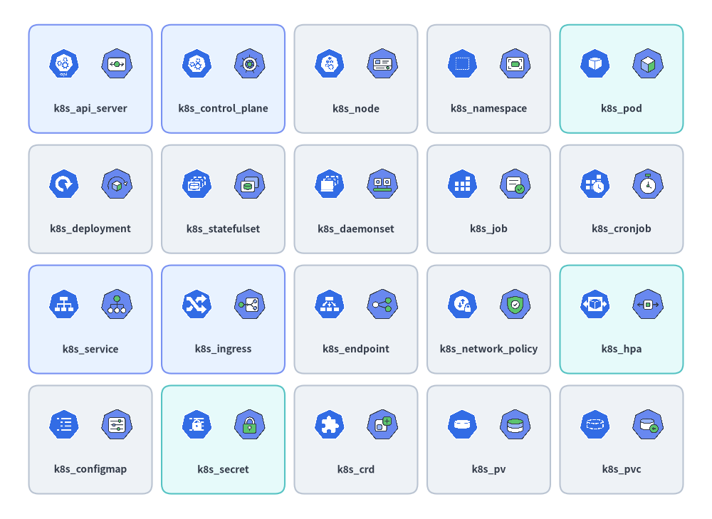
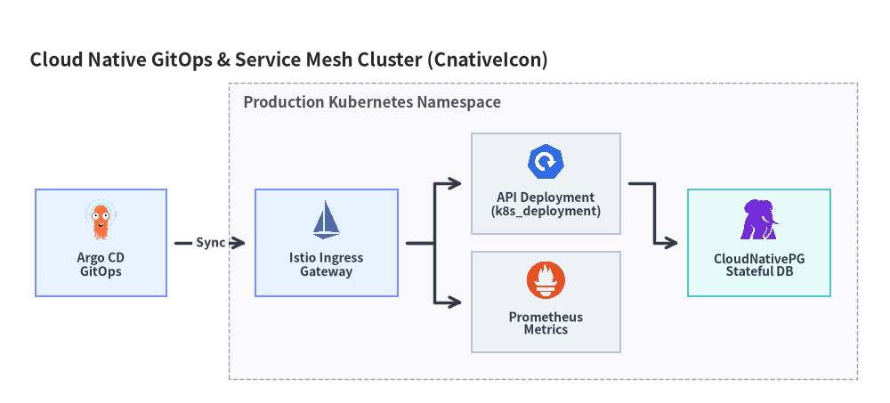

クラウドネイティブ (K8s) アイコン
Drawlib は、drawlib.icons.cnative（CnativeIcon）に 73 個の公式 CNCF・Kubernetes アイコンを、drawlib.icons.original_cnative（OriginalCnativeIcon）にそれと対になる 73 個の 2D パステルツインアイコンを提供します。両スイートとも、53 個のクラウドネイティブプロジェクトのブランドアイコンと 20 個の k8s_* Kubernetes ワークロード・ネットワーキング・ストレージリソースアイコンを収録しており、単体の図解や アーキテクチャ図 でそのまま利用できます（アイコン概要 も参照）。

Source Code
from drawlib.canvas import save, setup
from drawlib.icons import cnative, original_cnative
from drawlib.shapes import rectangle
from drawlib.styles import Styles
from drawlib.text import text
setup(width=146, height=64)
columns = [
("Kubernetes", cnative.kubernetes, original_cnative.kubernetes),
("Argo CD", cnative.argo, original_cnative.argo),
("Istio Mesh", cnative.istio, original_cnative.istio),
("Prometheus", cnative.prometheus, original_cnative.prometheus),
("k8s_pod", cnative.k8s_pod, original_cnative.k8s_pod),
]
rows = [
(40.0, "Official Suite", "drawlib.icons.cnative", Styles.Neutral),
(16.0, "2D Pastel Suite", "original_cnative", Styles.PrimaryNeutral),
]
for col_idx, (col_title, _, _) in enumerate(columns):
cx = 46.5 + col_idx * 22.0
text((cx, 56.5), col_title, style=Styles.DarkBold.patch(text_size=10.5))
for row_idx, (cy, row_title, row_sub, card_st) in enumerate(rows):
rectangle((19.0, cy), width=28.0, height=21.0, style=card_st.patch(shape_r=2))
text((19.0, cy + 3.0), row_title, style=Styles.DarkBold.patch(text_size=10.0))
text((19.0, cy - 3.0), row_sub, style=Styles.Muted.patch(text_size=10.0))
for col_idx, (lbl, fn_off, fn_orig) in enumerate(columns):
cx = 46.5 + col_idx * 22.0
cell_st = Styles.SecondaryNeutral if (row_idx == 1 and col_idx == 4) else card_st
rectangle((cx, cy), width=19.5, height=21.0, style=cell_st.patch(shape_r=2))
fn = fn_off if row_idx == 0 else fn_orig
fn((cx, cy + 3.0), width=8.5, style=Styles.Primary)
text((cx, cy - 6.0), lbl, style=Styles.DarkBold.patch(text_size=10.0))
save()
1. API シグネチャとツインモジュール構成
drawlib.icons.cnative のすべてのアイコンには、drawlib.icons.original_cnative 内に同じ関数名で 1 対 1 に対応するツインが存在します。両モジュールとも Drawlib 標準の中心アンカー (cx, cy) シグネチャを使用します。
from drawlib.diagrams.architecture import CnativeIcon, Node, OriginalCnativeIcon
from drawlib.icons import cnative, original_cnative
from drawlib.styles import Styles
# 1. Direct canvas rendering (anchored at center xy)
cnative.kubernetes((30, 25), width=10.0, style=Styles.Primary)
original_cnative.kubernetes((60, 25), width=10.0, style=Styles.Primary)
# 2. High-level ArchitectureDiagram Node integration via Enum
k8s_node = Node("Prod Cluster", icon=CnativeIcon.KUBERNETES, icon_size=8.0)
pod_node = Node("Worker Pod", icon=OriginalCnativeIcon.K8S_POD, icon_size=8.0)
| 項目 | 公式スイート（cnative） |
オリジナル 2D パステルスイート（original_cnative） |
|---|---|---|
| モジュールインポート | from drawlib.icons import cnative |
from drawlib.icons import original_cnative |
| 関数シグネチャ | cnative.<name>(xy, width, *, style, variant="default") |
original_cnative.<name>(xy, width, *, style, variant="default") |
| アーキテクチャ Enum | CnativeIcon.<NAME> |
OriginalCnativeIcon.<NAME> |
| 正規アイコン数 | 73（CNCF／プロジェクトブランド 53 個 + k8s_* リソース 20 個） |
73（2D パステルブランドツイン 53 個 + k8s_* リソース 20 個） |
| アセットアーカイブ | icon_cnative（512×512 RGBA PNG） |
icon_original_cnative（512×512 RGBA PNG） |
2. クラウドネイティブブランド・CNCF プロジェクトアイコン（53 個）
53 個のプロジェクトアイコンは、コンテナランタイム、Kubernetes ディストリビューション、GitOps コントローラー、サービスメッシュ、CNI プラグイン、クラウドネイティブストレージオペレーター、およびオブザーバビリティ／ポリシーエンジンを網羅しています。

Source Code
from drawlib.canvas import save, setup
from drawlib.icons import cnative
from drawlib.shapes import rectangle
from drawlib.styles import Styles
from drawlib.text import text
setup(width=144, height=64)
row1 = [
("kubernetes", "Orchestration", cnative.kubernetes, Styles.PrimaryNeutral),
("docker", "Runtime", cnative.docker, Styles.Neutral),
("helm", "Packaging", cnative.helm, Styles.Neutral),
("argo", "GitOps CD", cnative.argo, Styles.SecondaryNeutral),
("istio", "Service Mesh", cnative.istio, Styles.Neutral),
]
row2 = [
("cilium", "eBPF CNI", cnative.cilium, Styles.Neutral),
("envoy", "Edge Proxy", cnative.envoy, Styles.Neutral),
("prometheus", "Metrics", cnative.prometheus, Styles.PrimaryNeutral),
("grafana", "Dashboards", cnative.grafana, Styles.Neutral),
("opentelemetry", "Telemetry", cnative.opentelemetry, Styles.SecondaryNeutral),
]
for row_idx, items in enumerate([row1, row2]):
cy = 46.5 if row_idx == 0 else 17.5
for col_idx, (title, cat, icon_fn, card_st) in enumerate(items):
cx = 18.0 + col_idx * 27.0
rectangle((cx, cy), width=24.5, height=25.0, style=card_st.patch(shape_r=2))
icon_fn((cx, cy + 4.5), width=8.5, style=Styles.Primary)
text((cx, cy - 3.5), title, style=Styles.DarkBold.patch(text_size=10.0))
text((cx, cy - 8.2), cat, style=Styles.Muted.patch(text_size=10.0))
save()
2.1. ブランド・プロジェクトアイコン リファレンス一覧（全 53 正規名）
以下の 53 個の正規プロジェクト名はすべて、cnative.<name>（CnativeIcon.<NAME>）および original_cnative.<name>（OriginalCnativeIcon.<NAME>）の両方で利用できます。
| カテゴリ | 個数 | 正規アイコン名（cnative.* & original_cnative.*） |
|---|---|---|
| Kubernetes ディストリビューション・ランタイム・クラスター管理 | 14 | containerd, docker, k0s, k3s, kind, kubernetes, microk8s, minikube, okd, openshift, rancher, talos, tanzu, vcluster |
| GitOps・パッケージング・オートスケーリング・プラットフォームエンジニアリング | 11 | argo, backstage, crossplane, flux, helm, karpenter, keda, knative, kubevirt, kustomize, temporal |
| サービスメッシュ・CNI ネットワーキング・エッジプロキシ | 7 | calico, cilium, coredns, envoy, istio, linkerd, metallb |
| クラウドネイティブストレージ・データベース・メッセージングオペレーター | 8 | ceph, cloudnative_pg, etcd, longhorn, rook, strimzi, velero, vitess |
| オブザーバビリティ・セキュリティ・アイデンティティ・ポリシーエンジン | 13 | cert_manager, dapr, external_secrets, falco, fluentd, grafana, harbor, jaeger, kyverno, opa, opentelemetry, prometheus, spiffe |
3. Kubernetes リソースアイコン（k8s_* — 20 個）
プロジェクトロゴに加えて、cnative と original_cnative はクラスター内部のトポロジをモデル化するための k8s_* プレフィックス付き専用 Kubernetes リソースアイコン 20 個を備えています。以下の各カードでは、左側に公式の cnative.k8s_* アイコン、右側に original_cnative.k8s_* の 2D パステルツインを並べて描画しています。

Source Code
from drawlib.canvas import save, setup
from drawlib.icons import cnative, original_cnative
from drawlib.shapes import rectangle
from drawlib.styles import Styles
from drawlib.text import text
setup(width=148, height=108)
k8s_items = [
("k8s_api_server", cnative.k8s_api_server, original_cnative.k8s_api_server, Styles.PrimaryNeutral),
("k8s_control_plane", cnative.k8s_control_plane, original_cnative.k8s_control_plane, Styles.PrimaryNeutral),
("k8s_node", cnative.k8s_node, original_cnative.k8s_node, Styles.Neutral),
("k8s_namespace", cnative.k8s_namespace, original_cnative.k8s_namespace, Styles.Neutral),
("k8s_pod", cnative.k8s_pod, original_cnative.k8s_pod, Styles.SecondaryNeutral),
("k8s_deployment", cnative.k8s_deployment, original_cnative.k8s_deployment, Styles.Neutral),
("k8s_statefulset", cnative.k8s_statefulset, original_cnative.k8s_statefulset, Styles.Neutral),
("k8s_daemonset", cnative.k8s_daemonset, original_cnative.k8s_daemonset, Styles.Neutral),
("k8s_job", cnative.k8s_job, original_cnative.k8s_job, Styles.Neutral),
("k8s_cronjob", cnative.k8s_cronjob, original_cnative.k8s_cronjob, Styles.Neutral),
("k8s_service", cnative.k8s_service, original_cnative.k8s_service, Styles.PrimaryNeutral),
("k8s_ingress", cnative.k8s_ingress, original_cnative.k8s_ingress, Styles.PrimaryNeutral),
("k8s_endpoint", cnative.k8s_endpoint, original_cnative.k8s_endpoint, Styles.Neutral),
("k8s_network_policy", cnative.k8s_network_policy, original_cnative.k8s_network_policy, Styles.Neutral),
("k8s_hpa", cnative.k8s_hpa, original_cnative.k8s_hpa, Styles.SecondaryNeutral),
("k8s_configmap", cnative.k8s_configmap, original_cnative.k8s_configmap, Styles.Neutral),
("k8s_secret", cnative.k8s_secret, original_cnative.k8s_secret, Styles.SecondaryNeutral),
("k8s_crd", cnative.k8s_crd, original_cnative.k8s_crd, Styles.Neutral),
("k8s_pv", cnative.k8s_pv, original_cnative.k8s_pv, Styles.Neutral),
("k8s_pvc", cnative.k8s_pvc, original_cnative.k8s_pvc, Styles.Neutral),
]
for idx, (label, fn_off, fn_orig, card_st) in enumerate(k8s_items):
row = idx // 5
col = idx % 5
cx = 18.8 + col * 27.6
cy = 91.5 - row * 25.0
rectangle((cx, cy), width=25.6, height=22.5, style=card_st.patch(shape_r=2))
fn_off((cx - 5.5, cy + 3.2), width=7.2, style=Styles.Primary)
fn_orig((cx + 5.5, cy + 3.2), width=7.2, style=Styles.Primary)
text((cx, cy - 6.2), label, style=Styles.DarkBold.patch(text_size=10.0))
save()
3.1. k8s_* リソースアイコン リファレンス一覧（全 20 正規名）
| 正規名 | 公式呼び出し（cnative） |
2D パステル呼び出し（original_cnative） |
CnativeIcon / OriginalCnativeIcon Enum |
Kubernetes リソース種別とアーキテクチャ上の役割 |
|---|---|---|---|---|
k8s_api_server |
cnative.k8s_api_server |
original_cnative.k8s_api_server |
K8S_API_SERVER |
kube-apiserver コントロールプレーンゲートウェイ |
k8s_configmap |
cnative.k8s_configmap |
original_cnative.k8s_configmap |
K8S_CONFIGMAP |
ConfigMap 非機密の設定データ |
k8s_control_plane |
cnative.k8s_control_plane |
original_cnative.k8s_control_plane |
K8S_CONTROL_PLANE |
Kubernetes コントロールプレーン（scheduler、controller-manager） |
k8s_crd |
cnative.k8s_crd |
original_cnative.k8s_crd |
K8S_CRD |
CustomResourceDefinition オペレーター API 拡張 |
k8s_cronjob |
cnative.k8s_cronjob |
original_cnative.k8s_cronjob |
K8S_CRONJOB |
CronJob スケジュール実行型のバッチワークロード |
k8s_daemonset |
cnative.k8s_daemonset |
original_cnative.k8s_daemonset |
K8S_DAEMONSET |
DaemonSet ノード単位のバックグラウンドエージェント |
k8s_deployment |
cnative.k8s_deployment |
original_cnative.k8s_deployment |
K8S_DEPLOYMENT |
Deployment ステートレスレプリカコントローラー |
k8s_endpoint |
cnative.k8s_endpoint |
original_cnative.k8s_endpoint |
K8S_ENDPOINT |
Endpoints / EndpointSlice ネットワーク転送先 IP リスト |
k8s_hpa |
cnative.k8s_hpa |
original_cnative.k8s_hpa |
K8S_HPA |
HorizontalPodAutoscaler 動的なレプリカスケーリング |
k8s_ingress |
cnative.k8s_ingress |
original_cnative.k8s_ingress |
K8S_INGRESS |
Ingress L7 HTTP/HTTPS ルーティングルール |
k8s_job |
cnative.k8s_job |
original_cnative.k8s_job |
K8S_JOB |
Job 完了まで実行するバッチタスク |
k8s_namespace |
cnative.k8s_namespace |
original_cnative.k8s_namespace |
K8S_NAMESPACE |
Namespace 仮想クラスター境界 |
k8s_network_policy |
cnative.k8s_network_policy |
original_cnative.k8s_network_policy |
K8S_NETWORK_POLICY |
NetworkPolicy L3/L4 Pod ファイアウォールルール |
k8s_node |
cnative.k8s_node |
original_cnative.k8s_node |
K8S_NODE |
Node ワーカー VM またはベアメタル kubelet ホスト |
k8s_pod |
cnative.k8s_pod |
original_cnative.k8s_pod |
K8S_POD |
Pod 同一ノードに配置される最小単位のコンテナグループ |
k8s_pv |
cnative.k8s_pv |
original_cnative.k8s_pv |
K8S_PV |
PersistentVolume クラスターストレージボリューム |
k8s_pvc |
cnative.k8s_pvc |
original_cnative.k8s_pvc |
K8S_PVC |
PersistentVolumeClaim Pod のストレージマウント要求 |
k8s_secret |
cnative.k8s_secret |
original_cnative.k8s_secret |
K8S_SECRET |
Secret 暗号化された認証情報・TLS 鍵・トークン |
k8s_service |
cnative.k8s_service |
original_cnative.k8s_service |
K8S_SERVICE |
Service 固定の ClusterIP / LoadBalancer 仮想 IP |
k8s_statefulset |
cnative.k8s_statefulset |
original_cnative.k8s_statefulset |
K8S_STATEFULSET |
StatefulSet 順序と永続性を保つステートフルワークロードコントローラー |
4. 実践的なアーキテクチャ図（CnativeIcon と OriginalCnativeIcon）
以下の ArchitectureDiagram では、本番クラスター境界内で CNCF プロジェクトアイコン（Argo、Istio、CloudNativePG、Prometheus）と Kubernetes リソースアイコン（K8S_INGRESS、K8S_SERVICE、K8S_DEPLOYMENT、K8S_PVC など）を組み合わせています。
from drawlib.canvas import save, setup
from drawlib.diagrams.architecture import ArchitectureDiagram, CnativeIcon, Node, NodeGroup
from drawlib.styles import Styles
setup(width=150, height=68)
d = ArchitectureDiagram(
node_style=Styles.Primary,
node_text_style=Styles.DarkBold.patch(text_size=10.0),
edge_style=Styles.DarkBold,
edge_text_style=Styles.DarkBold.patch(text_size=10.0),
node_card_style=Styles.Neutral,
title="Cloud Native GitOps & Service Mesh Cluster (CnativeIcon)",
)
argo = d.add(
Node(
"Argo CD\nGitOps",
width=22,
height=18,
icon=CnativeIcon.ARGO,
icon_size=7.5,
card_style=Styles.PrimaryNeutral,
),
xy=(13.0, 23.0),
)
cluster = d.add(NodeGroup(title="Production Kubernetes Namespace", padding=4.5), xy=(36.0, 4.0))
ing = cluster.add(
Node(
"Istio Ingress\nGateway",
width=24,
height=18,
icon=CnativeIcon.ISTIO,
icon_size=7.5,
card_style=Styles.PrimaryNeutral,
),
xy=(15.0, 19.0),
)
deploy = cluster.add(
Node(
"API Deployment\n(k8s_deployment)",
width=25,
height=17,
icon=CnativeIcon.K8S_DEPLOYMENT,
icon_size=7.2,
),
xy=(52.0, 29.0),
)
prom = cluster.add(
Node(
"Prometheus\nMetrics",
width=25,
height=17,
icon=CnativeIcon.PROMETHEUS,
icon_size=7.2,
),
xy=(52.0, 9.0),
)
cnpg = cluster.add(
Node(
"CloudNativePG\nStateful DB",
width=24,
height=18,
icon=CnativeIcon.CLOUDNATIVE_PG,
icon_size=7.5,
card_style=Styles.SecondaryNeutral,
),
xy=(88.0, 19.0),
)
d.connect(argo, ing, label="Sync", padding=1.5)
d.connect(ing, deploy, padding=1.5)
d.connect(ing, prom, padding=1.5)
d.connect(deploy, cnpg, padding=1.5)
d.draw(xy=(4.0, 4.0))
save()

[!TIP] CI/CD パイプライン、Infrastructure as Code（Terraform、OpenTofu、Ansible）、および APM プラットフォームについては、**DevOps・オブザーバビリティアイコンを参照してください。物理・仮想ルーター、ファイアウォール、および L2/L3 スイッチについては、ネットワーク・Cisco トポロジアイコン**を参照してください。